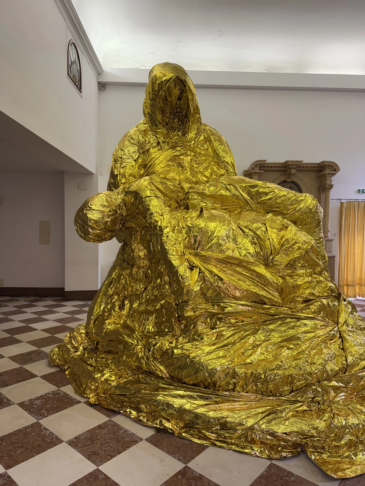
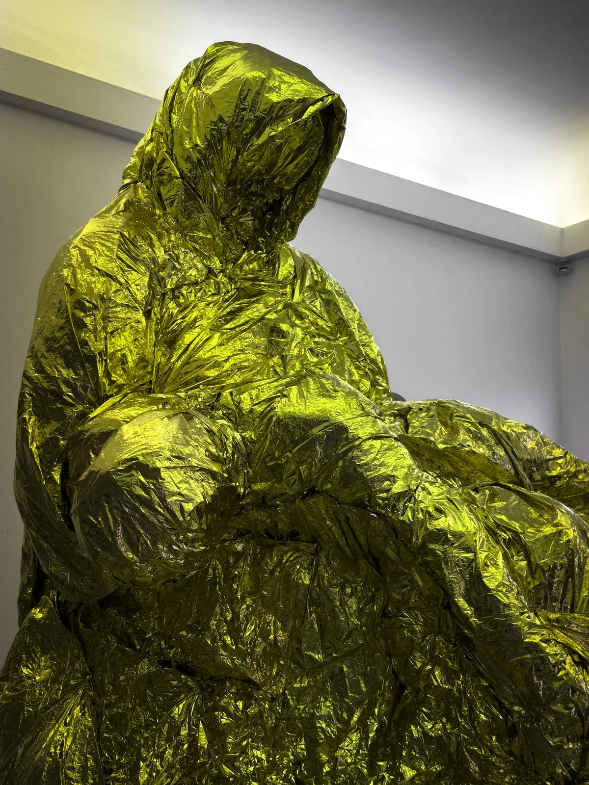
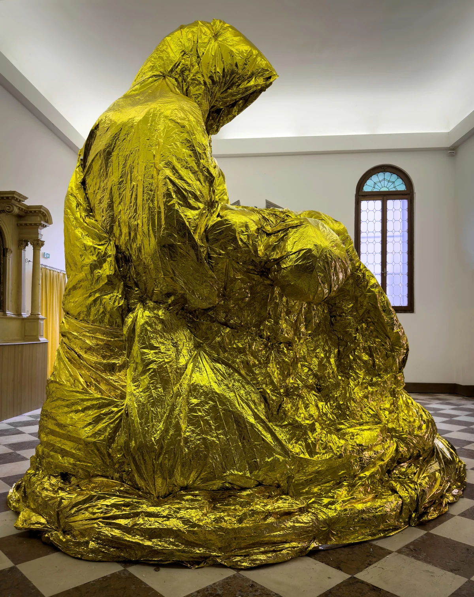

Art | Focus
Velimir Zernovski’s Gold Pietà
At the Venice Biennale, the Macedonian artist draped a version of Michelangelo’s sculpture in the foil blankets used to keep people warm in an emergency.

In a former chapel near Venice’s Arsenale, two figures are almost swallowed by gold. The foil gathers in sharp creases where Mary holds the body of Christ. Michelangelo carved the folds of Mary’s robe in marble. Here, much of what you see is the surface of an emergency blanket catching the light.
Velimir Zernovski presented Pietà in the Emergency Blankets at Macedonia’s pavilion at the 2026 Venice Biennale. The Museum of Contemporary Art in Skopje organized the exhibition, curated by Tihomir Topuzovski and Amanda Boetzkes. Zernovski told Bloomberg Adria that the idea for the sculpture came to him years earlier while listening to Björk’s “Hyperballad.” A line from the song gave the work its first title, Will My Eyes Be Closed or Open?
In an interview with Umno, Zernovski recalled seeing images of people wrapped in gold blankets, weeping over loved ones. The brilliance of the material stayed with him. Made from thin, metallized plastic, the blanket is designed to retain body heat. In the chapel, its color calls to mind the gold of an altarpiece. In the images Zernovski remembered, that same shine came from something a person had been given to keep warm.
Mary’s gesture survives the covering. You can still make out one body holding the weight of another. The foil makes that familiar pose harder to see and the act of holding someone easier to notice.


Sources
La Biennale di Venezia. Pavilion entry and exhibition details.
Museum of Contemporary Art, Skopje. Exhibition announcement.
Gjorge Stojanov, Bloomberg Adria. Interview with Velimir Zernovski, May 2026.
Vesna Ivanovska-Ilievska, Umno. Interview with Velimir Zernovski, May 2026.
Macedonian pavilion announcement in e-flux. Exhibition text and installation photographs.